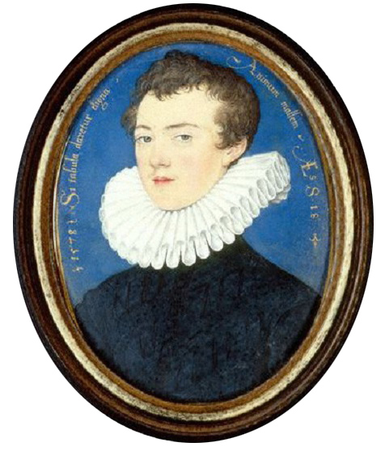

|
 Фрэнсис Бэкон - можно смело сказаь, что он является основателем метода индукции, также как Декарт является основателем дедукции. Бекон нам кажется таким древним и чужим нашему современному пониманию, но, как оказывается - это совсем не так. Когда Вы прочтете этот небольшой отрывок, Вы наверное и не почувствуете, что это мысли не нашего современника. Привлекает очень четкое выражение мысли, глубокое владение предметом. По моему, Бекон предлагает весьма удобные классификации. Мне лично очень амизантным показалось его обозначение поэзии, по сравнению с философией: In philosophy the mind is bound to things; in poesy it is released from that bond, and wanders forth, and feigns what it pleases. (А.А.).Division of all Human Learning into History, Poesy, and Philosophy, according to the three faculties of the mind, Memory, Imagination, and Reason: and that the same division holds good likewise in Theology; the vessel (that is, the human understanding) being the same, though the matter and the manner of conveyance be different. I adopt that division of human learning which corresponds to the three faculties of the understanding. Its parts therefore are three; History, Poesy, and Philosophy. History is referred to the Memory; poesy to the Imagination; philosophy to the Reason. And by poesy here I mean nothing else than feigned history. History is properly concerned with individuals; the impressions whereof are the first and most ancient guests of the human mind, and are as the primary material of knowledge. With these individuals and this material the human mind perpetually exercises itself, and sometimes sports. For as all knowledge is the exercise and work of the mind, so poesy may be regarded as its sport. In philosophy the mind is bound to things; in poesy it is released from that bond, and wanders forth, and feigns what it pleases. That this is so any one may see, who seeks ever so simply and without subtlety into the origins of intellectual impressions. For the images of individuals are received by tho sense and fixed in the memory. They pacs into the memory whole, just as they present themselves. Then the mind recalls and reviews them, and (which is its proper office) compounds and divides the parts of which they consist. For the several individuals have something in common one with another, and again something different and manifold. Now this composition and division is either according to the pleasure of the mind, or according to the nature of things as it exists in fact. If it be according to the pleasure of the mind, and these parts are arbitrarily transposed into the likeness of some individual, it is the work of imagination; which, not being bound by any law and necessity of nature or matter, may join things which are never found together in nature and separate things which in nature are never found apart; being nevertheless confined therein to these primary parts of individuals. For of things that have been in no part objects of the sense, there can be no imagination, not even a dream. If on the other hand these same parts of individuals are compounded and divided according to the evidence of things, and as they really show themselves in nature, or at least appear to each man's comprehension to show themselves, this is the office of reason; and all business of this kind is assigned to reason. And hence it is evident that from these three fountains flow these three emanations, History, Poesy, and Philosophy; and that there cannot be other or more than these. For under philosophy I include all arts and sciences, and in a word whatever has been from the occurrence of individual objects collected and digested by the mind into general notions. Nor do I think that there is need of any other division than this for Theology. For the informations of revelation and of sense differ no doubt both in matter and in the manner of entrance and conveyance; but yet the human spirit is one and the same; and it is but as if different liquors were poured through different funnels into one and the same vessel. Therefore I say that Theology itself likewise consists either of sacred history, or of divine precepts and doctrines, as a kind of perennial philosophy. And that part which seems to fall outside this division (that is, prophecy) is itself a species of history, with the prerogative of divinity wherein times are joined together, that the narrative may precede the fact; and the manner of delivery, both of prophecies by means of visions and of divine doctrine by parables, partakes of poesy. A.A.
|